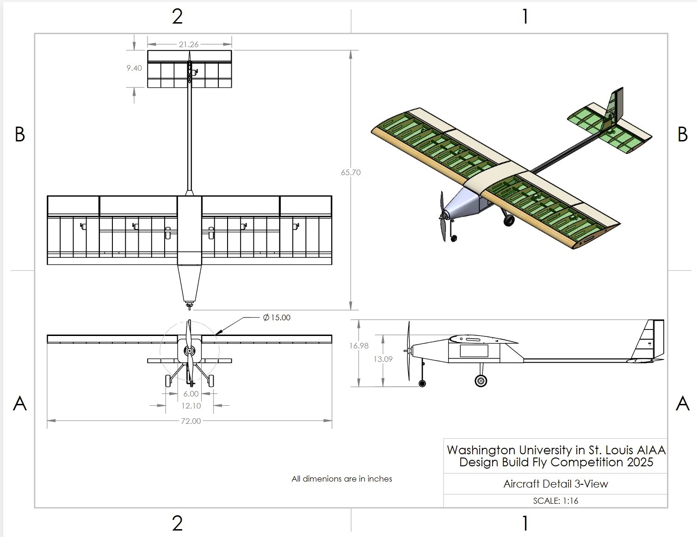
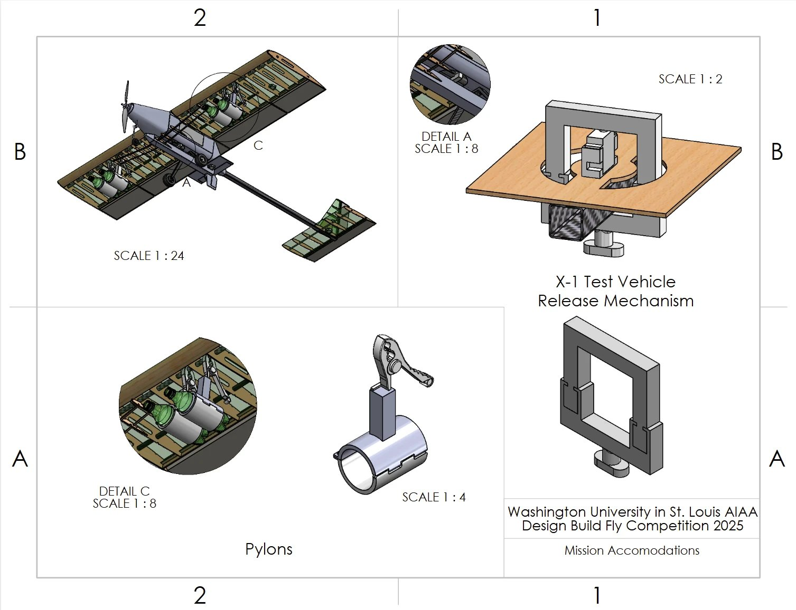
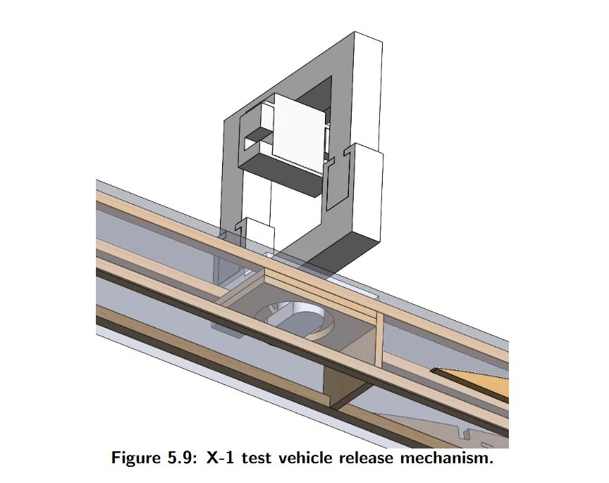

SolidWorksANSYS FEAComposite Fabrication
Aircraft DesignDestructive TestingGD&T
Overview
WashU's AIAA Design-Build-Fly team competes annually in the national DBF competition — designing, fabricating, and flying a radio-controlled aircraft that completes scored missions while meeting strict weight and configuration requirements. I lead structures, responsible for all load-bearing design and fabrication.
Aircraft Design

Aircraft Detail 3-View · Scale 1:16 · 72" wingspan

Mission accommodations — pylons and X-1 release mechanism
- Full aircraft designed in SolidWorks — 72" wingspan, composite wing and fuselage, conventional tricycle gear
- Structures optimized for minimum takeoff weight while meeting competition load requirements
- Engineering drawing package produced at 1:16 scale per ASME standards
X-1 Release Mechanism

X-1 test vehicle release mechanism — in-flight payload deployment
- Designed constrained slider mechanism for in-flight payload deployment — must release cleanly under flight loads without disturbing aircraft stability
- Mechanism detailed at Scale 1:2; validated through bench testing before integration
- Pylon system designed to carry external payload masses on wing hardpoints for multi-mission configurations
FEA & Fabrication
- ANSYS FEA used to validate load paths and safety factors under 1g, 2g, and limit load conditions
- Composite wing and fuselage prototypes fabricated and subjected to destructive testing — experimental failure loads correlated against FEA predictions to refine the model
- Design iterations driven by test data, not just simulation
Lessons Learned
FEA is a tool, not a guarantee
Our first composite prototype failed at a lower load than ANSYS predicted. The discrepancy traced back to a boundary condition assumption — we had constrained the root differently in simulation than the actual joint behaved. Destructive testing is not optional when the model hasn't been calibrated against real data.
Weight is everything in aircraft design
Every gram saved on structure is a gram of payload capacity or fuel margin. The habit of asking "what's the minimum structure that survives the load?" before adding material is something I carry into every design now.